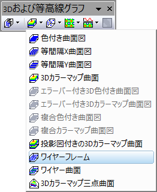

ワイヤーフレーム曲面図
Wire-Frame
要求されるデータ
- ワークシート: 少なくとも1つのZ列（あるいは、その部分領域）を選択します。Z列に結びついたXY列がある場合、そのXY列が使われます。そうでない場合、ワークシートのデフォルトのXY値が使われます。
または
グラフ作成
行列シートをアクティブにするか必要なデータをワークシート上で選択します。
メニューから｢｣を選択します。
または、
「3Dおよび等高線グラフ」ツールバーの「ワイヤーフレーム」ボタン をクリックします。
- 
テンプレート
- glWIREFRM.OTP (OpenGL)
- WIREFRM.OTP
(Originのプログラムフォルダにインストールされています。)
ノート
Z値はXとYのグリッド線の曲面で決まります。